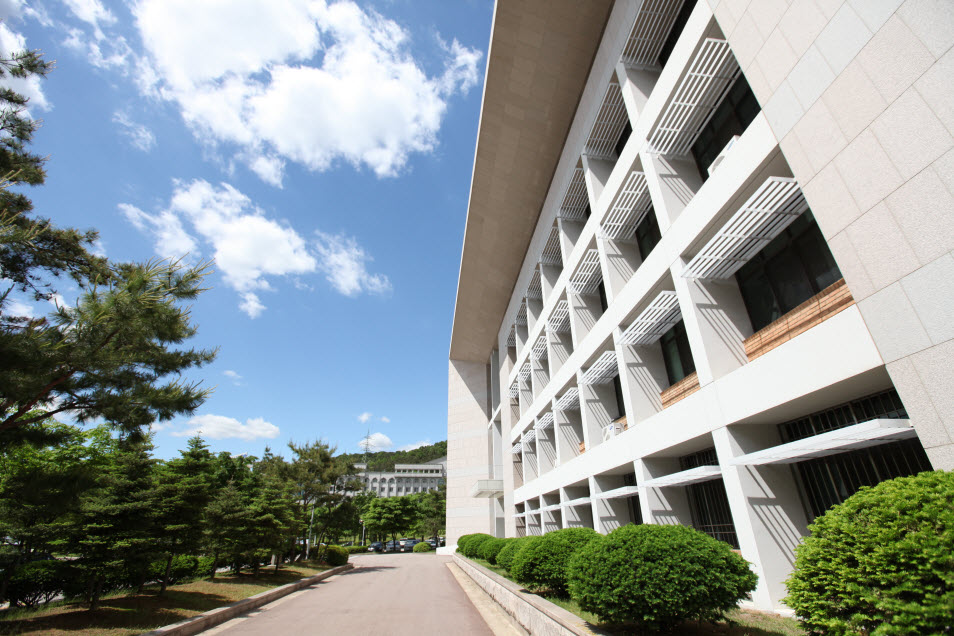
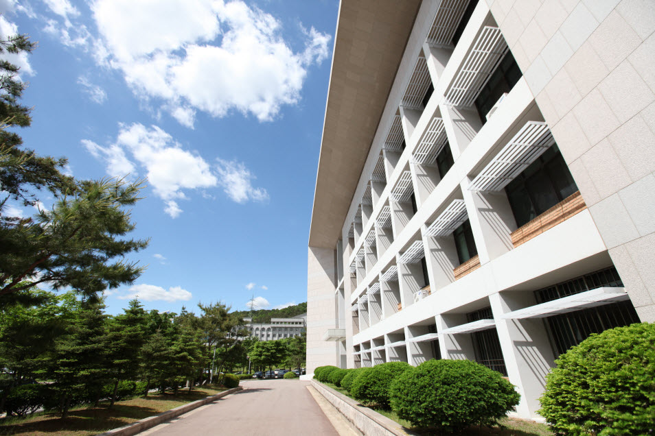

Home
캠퍼스 이미지


 



안녕하십니까? 버추얼 대학교에 관심을 가져주셔서 감사합니다. 버추얼 대학교는 1세기의 역사를 지니며 그 동안 많은 발전을 거듭하였습니다.
버추어 대학교는 세계에서 가장 선도적인 대학교 중의 하나로 인정받고 있습니다. 설립목적은 사회와 개인에 직접적인 기여와 성공을 준비할 수 있도록 하는 것입니다. 궁극적으로는 인류문명에 유용한 인재를 양성하는 것입니다. 오늘날 버추얼 대학교는 현재 인류가 당면하고 있는 여러 문제를 해결하고 다음 세대를 선도할 수 있는 리더가 될 수 있도록 학생들을 준비시키는 것입니다.
여러분의 미래를 버추얼 대학교에서 함께하시길 희망합니다.
총장 Luke Andrew